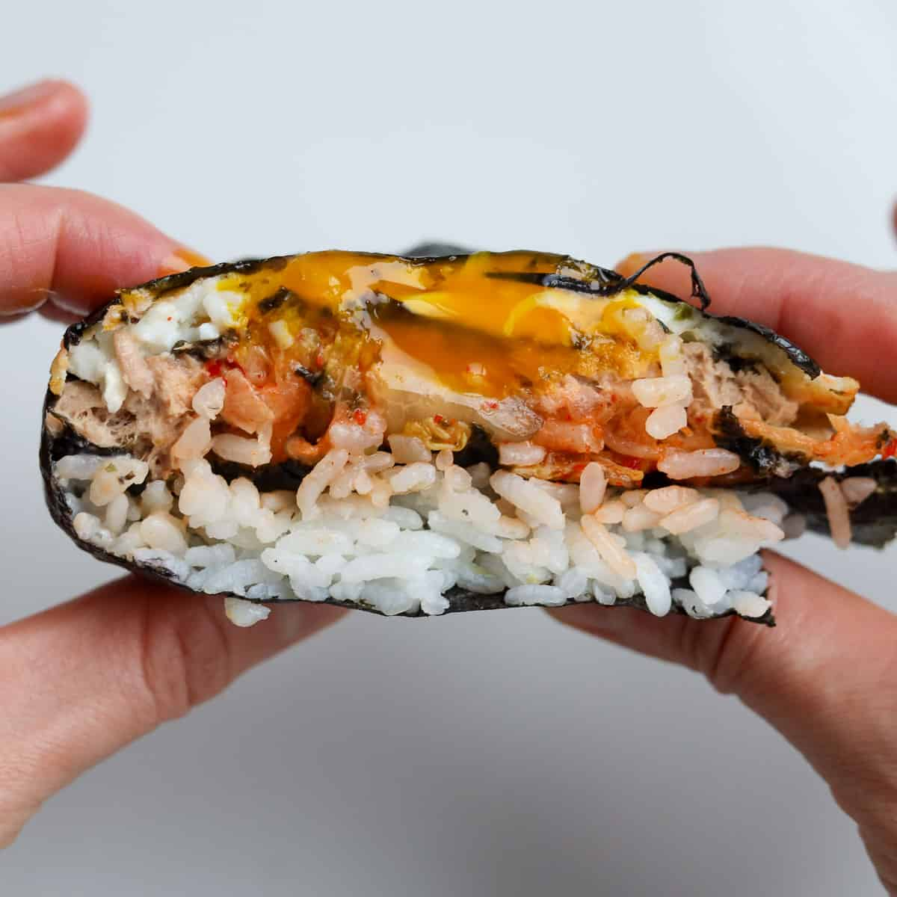
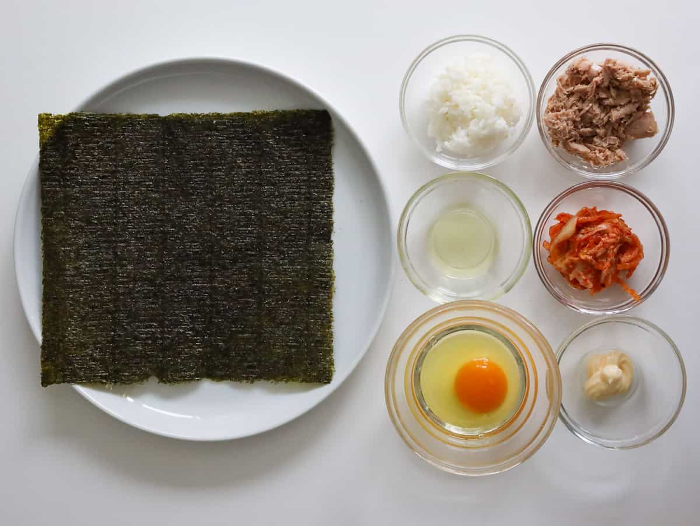

Folded Kimbap
Folded Kimbap. A super easy kimbap recipe featuring tuna mayo with egg and kimchi. This simple and quick recipe is made with minimal ingredients in 10 minutes with cooked rice! Great as a snack or meal.
Jump to recipeFolded Kimbap. A super easy kimbap recipe featuring tuna mayo with egg and kimchi. This simple and quick recipe is made with minimal ingredients in 10 minutes with cooked rice! Great as a snack or meal.
Jump to recipeThe Folded Kimbap hack is a smart and quick way to have kimbap without going through the trouble of rolling it.
The Korean tortilla hack was inspired by the viral tortilla hack on social media, where people would make a slit into a tortilla and place filling ingredients in each corner and fold to enjoy.
The Korean version of this hack uses Korean ingredients so you can enjoy a regular kimbap more easily. Then years later, the Korean drama "Extraordinary Attorney Woo" featured this hack and made it even more viral!
My version features tuna mayo, kimchi, egg with leftover cooked rice and it really hits the spot! It's also a great meal to make when I am too lazy to make kimbap!
You can also use different ingredients such as spam, fried tofu, perilla leaves, fish cake, yellow daikon radish, baby spinach, crab meat and more!
Folded Kimbap (Korean Tortilla Hack). A super easy kimbap recipe featuring tuna mayo with egg and kimchi. Great as a quick meal. Ready in 10 minutes with cooked rice.
Prep Time 10 mins
Total Time 10 mins
Folded kimbap serves well with other Korean side dishes like kimchi, Korean cucumber salad, beansprout salad, zucchini fritters, gamja jorim, or Korean spinach.
Yes, feel free to sub the tuna mayo mixture with pan fried spam and the kimchi with cooked spinach sautéed with sesame oil and a bit of salt.
Kimbap should be eaten fresh at room temperature or warm.
It should be consumed immediately or within 24 hours and no longer because rice is a breeding ground for bacteria.
Sushi originates from Japan and is a rice seaweed wrapped roll containing mostly raw and sometimes cooked ingredients. On the other hand, kimbap comes from Korea and contains mostly cooked ingredients. Certainly, both are very delicious!